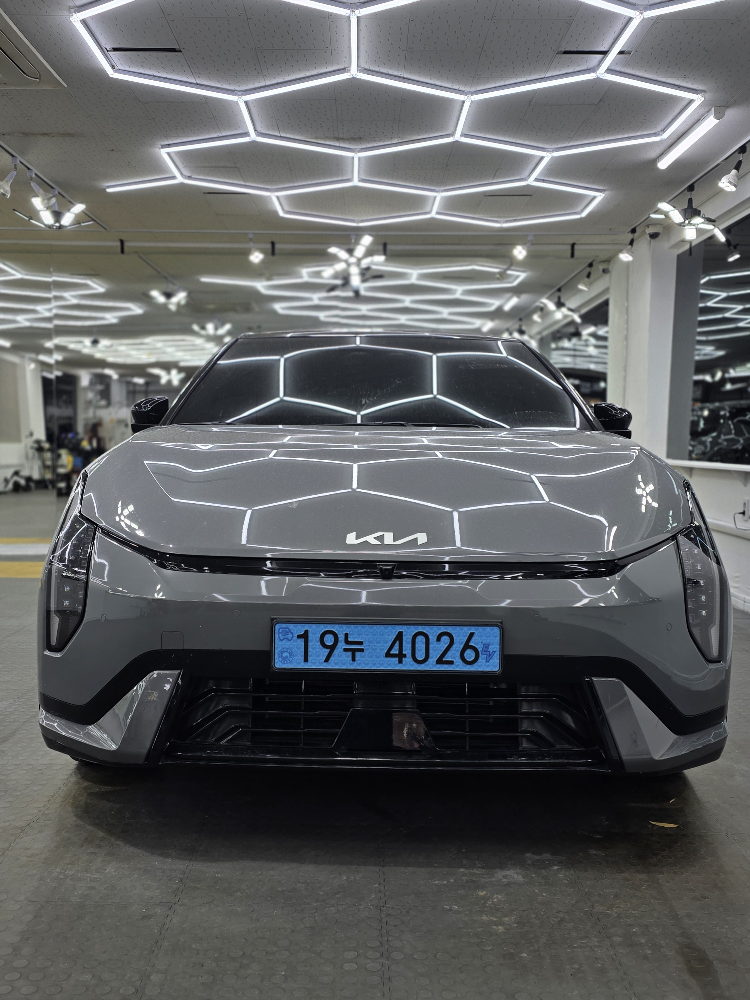
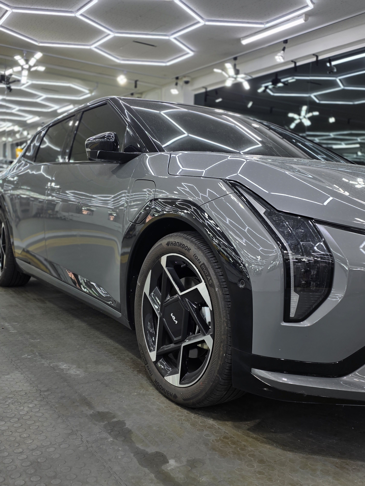
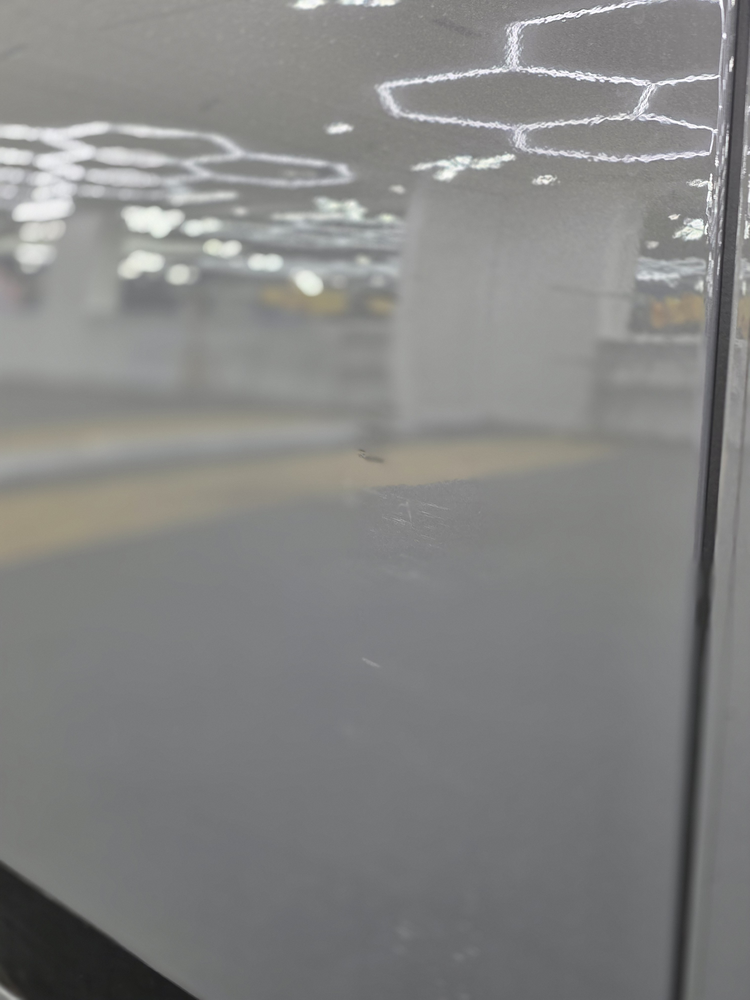
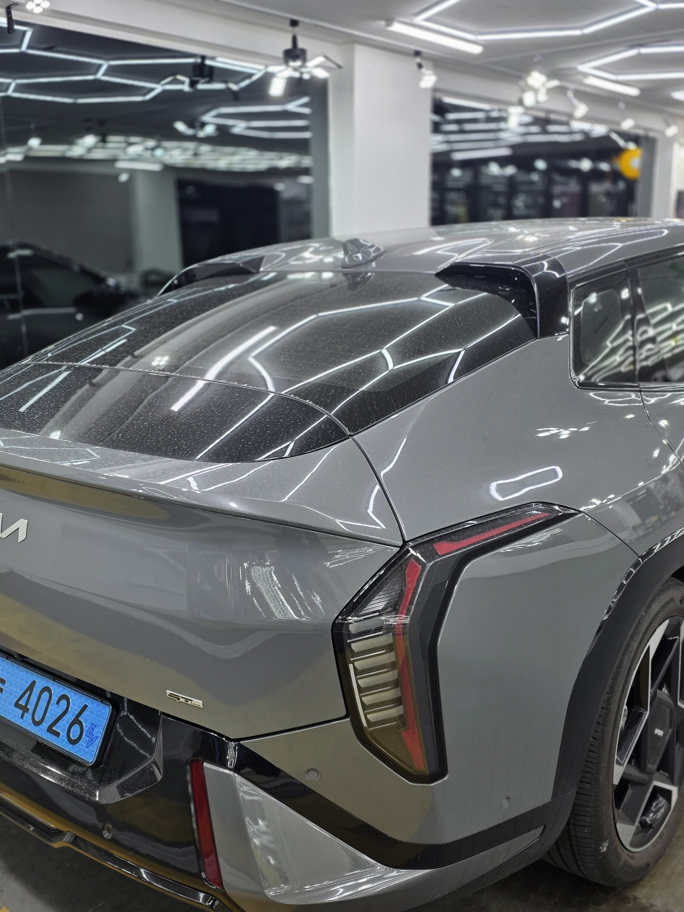
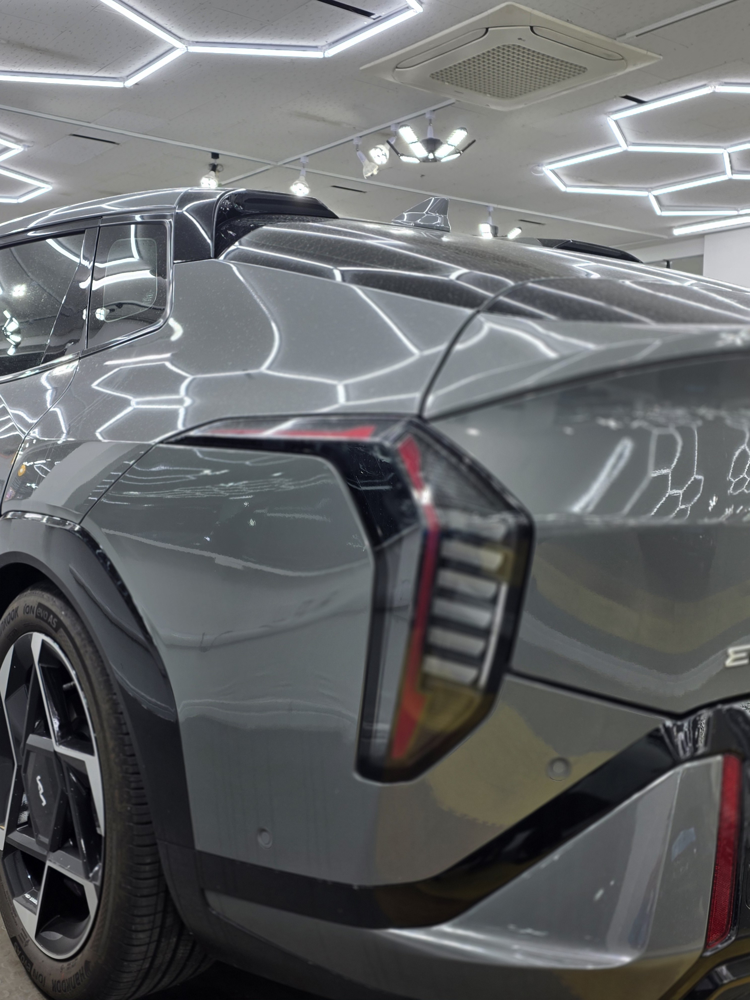
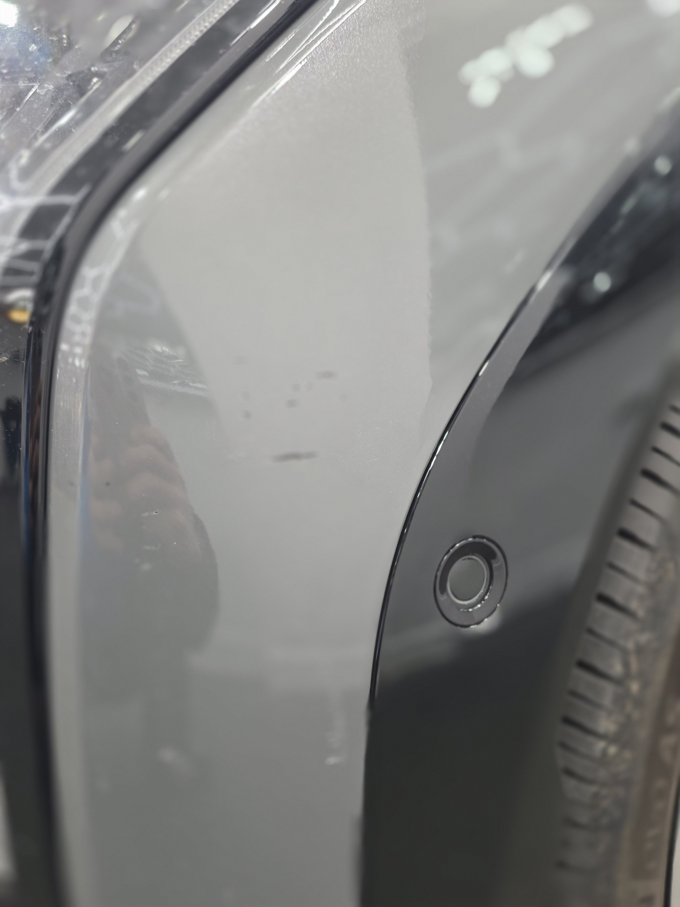

부산 쉴드광택에 들어온 기아 EV4입니다. 회색 바디입니다.
이 차는 광택으로 표면을 정리한 뒤, 유리막코팅으로 마감했습니다.

전기차도 광택·유리막코팅이 필요한가
필요합니다. 전기차라고 도장이 다른 게 아닙니다.
잔기스도, 물때도, 오염도 똑같이 생깁니다. 관리 방법도 같습니다. 도장면을 정리하고 코팅막을 입혀두면 오염이 덜 묻고 세차가 편해집니다.

회색 메탈릭, 코팅하면 뭐가 달라지나
회색 메탈릭은 표면이 깨끗할 때 금속 입자가 또렷하게 살아납니다.
광택으로 표면을 평탄하게 정리하고 코팅을 올리면 색이 더 선명하고 깊어 보입니다. 거기에 발수·방오가 더해져 관리도 쉬워집니다.

기술자의 팁
밝은 회색은 검정만큼 잔기스가 두드러지진 않지만, 표면이 정리돼야 메탈릭 특유의 입자감이 살아납니다. 광택과 코팅의 차이는 빛을 받을 때 확연히 드러납니다.
코팅 전, 전처리가 9할입니다
좋은 코팅도 더러운 바탕 위에 올리면 의미가 없습니다.
디테일링 세차로 표면 오염을 걷어내고, 철분 제거제로 박힌 쇳가루를 녹여냅니다. 탈지까지 끝낸 뒤에야 코팅을 올립니다. 눈에 안 보이는 오염까지 잡는 게 퀄리티의 시작입니다.

마감 후
표면이 정리되니 조명이 도장면에 또렷하게 맺힙니다.
회색 메탈릭 위에 유리막코팅으로 보호막을 한 겹 올린 상태입니다. 발수·방오로 일상 관리가 한결 수월해집니다.


시공 후, 이렇게 관리하세요
코팅은 시공으로 끝이 아닙니다. 관리로 수명이 갈립니다.
완전 경화 전(약 하루)에는 비·눈·세차를 피해 주십시오. 자동세차(기계세차)는 브러시가 잔기스를 만드니 피하시는 게 좋습니다. 3주에 한 번 관리 세차 때 전용 관리제를 써주시면 코팅력이 오래 유지됩니다.
자주 묻는 질문
Q. 전기차도 광택·유리막코팅이 필요한가요?
A. 필요합니다. 전기차라고 도장이 다른 게 아닙니다. 잔기스·물때·오염은 똑같이 생기고, 코팅을 올려두면 오염이 덜 묻고 세차가 편해집니다.
Q. 회색 메탈릭에 코팅하면 뭐가 좋나요?
A. 회색 메탈릭은 표면이 깨끗할 때 금속 입자가 또렷하게 살아납니다. 광택 후 코팅을 올리면 색이 더 선명하고 깊어 보이며 관리도 쉬워집니다.
Q. 신차도 코팅 전에 전처리를 하나요?
A. 합니다. 새 차라도 운송·보관 중 미세 오염이 묻습니다. 디테일링 세차와 탈지로 표면을 정리한 뒤 코팅을 올려야 제대로 밀착합니다.
Q. 쉴드광택 위치와 예약은 어떻게 하나요?
A. 부산 남구 유엔로220 1F 쉴드광택입니다. 예약·상담은 010-3384-1850, 대표 최한중이 직접 상담하고 책임 시공합니다.
전기차든 내연기관이든, 도장 관리는 똑같습니다.
제품을 직접 만드는 사람이 직접 시공합니다.
부산에서 광택·유리막코팅을 고민 중이시면 편하게 연락 주십시오.
어떤 차를 타냐보다 어떻게 타냐가 중요합니다~!
📞 010-3384-1850 견적 문의쉴드광택 · 부산 남구 유엔로220 1F · 대표 최한중